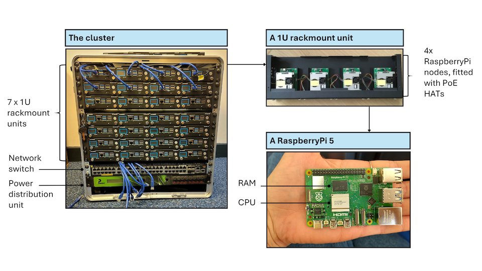
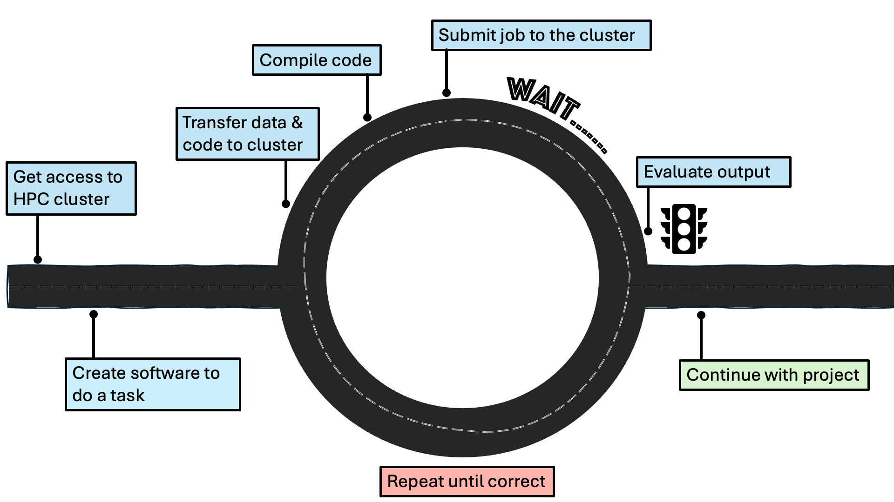

All in One View
Content from Why use HPC?
Last updated on 2026-08-21 | Edit this page
Overview
Questions
- What types of research problem would benefit from using a High-Performance Computing (HPC) cluster?
Objectives
- Explain why HPC is becoming increasingly important for research.
- List types of problems that the use of HPC can help to solve.
- Recognise the importance of HPC across different disciplines.
Introduction
Icebreaker questions
What Digital Research Infrastructure facilities are you aware of in your institution?
Scientific research is becoming increasingly computational, relying on large datasets and advanced computing power (Foster, 2011). This feels intuitively true, but it has also been verified by studies which have tried to quantify this change: One study looking at the size of medical image datasets used for research found that the size of the median dataset in 2018 was up to 10 times larger compared to 2011 (Kiryati & Landau, 2021). Another study, looking at big data in industry and academia, expects the data that CERN records in a year to increase from 160 petabytes in 2018 to 800 petabytes in 2026, a more than fourfold increase of an already huge amount of data (Clissa, Lassnig, & Rinaldi, 2023).
In addition to ever-growing dataset size, scientists are also increasingly turning to computational methods. For example, biology used to be a discipline based exclusively in a wet lab, but bioinformatics over the last few decades has become a substantial percentage of biological research. Or, think of meteorology - people have been trying to predict the weather for millenia, but doing so as accurately as we can now is only possible because of big data and highly complex models. These advances in data size and calculation complexity require a lot of computing power, certainly more than an individual laptop or work station can provide.
To get around this problem, researchers may turn to High-Performance Computing (HPC) which refers to the use of powerful computers and programming techniques to solve computationally-intensive tasks. HPC can refer to custom-built supercomputers or to groups of individual computers that are connected together in a network and work as a unified system, forming a cluster. We call these individual computers of a cluster nodes.
To give a taste of the benefit of using HPC over a regular computer, let’s look at an example: A PhD student wants to cross-validate a statistical model 1,000 times. Running the model on a laptop once takes one hour, meaning that cross-validating it 1,000 times would take over a month! However, if all of the model runs happen in parallel on 1,000 nodes of an HPC cluster, the cross-validation would be complete in one hour. How much research can be sped up is highly dependent on how efficient the code is and how parallelisable the problem.
What kind of resources does this researcher need?
In each of the four following scenarios, does the researcher need access to HPC or would a laptop suffice?
- Analyse survey responses from 300 human participants with 10 variables.
- Run a climate model simulation at high spatial resolution.
- Train a modern Large Language Model to power an AI chatbot.
- Run a simple regression on CSV data (50 MB).
- Analyse survey responses from 300 human participants.
- Answer: laptop
- Run a climate model simulation at high spatial resolution.
- Answer: HPC
- Train a Large Language Model.
- Answer: HPC
- Run a simple regression on CSV data (50 MB).
- Answer: laptop
Case studies
Let’s now look at some specific cases in which the use of an HPC cluster enabled impactful research.
Case study 1: Physics
Most of us will remember the excitement that surrounded the release of the first image of a black hole, captured in 2019. That was the black hole in the centre of the M87 galaxy; although not as widely reported on, an image of SgrA, the black hole in the centre of our own galaxy, was also captured in 2022. The existence of black holes was first posited over a century ago but, while they had been previously observed indirectly*, 2019 was the first visual confirmation that black holes actually exist. HPC underlies multiple of the steps involved in creating these images, images which provide strong evidence for Einstein’s theory of general relativity and have implications for our understanding of the universe.
Why study black holes?
Black holes are extreme regions of space, where it appears that both general relativity and quantum physics play a role. General relativity does a good job of explaining the gravitation of very large objects and led to the discovery of the Big Bang. This applies to black holes because of the vast gravitational pull they exhibit. Quantum physics does a good job of explaining the behaviour of very small objects, specifically subatomic particles (like photons and electrons). This applies to black holes because of the unknown nature of matter as it is pulled in. Physicists currently do not have a way to reconcile the two, but black holes, where both general relativity and quantum physics play a role, can serve as laboratories for testing these fundamental theories.
Directly observing and taking a picture of a black hole is really difficult. Part of the problem is that black holes are so massive and so dense that almost nothing can escape them, not even light. That is because when something enters the boundary of the black hole (the event horizon), the velocity it would need to escape exceeds the speed of light, which is as fast as anything can move. As such, the black hole is essentially dark - there is almost nothing to photograph. Around the black hole is a structure called an accretion disk, a hot disk of gas which is the fuel and main light source of the black hole. The gas swirls around the black hole and gradually moves from the outer part of the disk to its inner edge, where it falls into the event horizon. The dark zone produced by this is known as the event horizon shadow which is what we see in the images of the M87* and SgrA*.
Notably these are not photographs. They are radiolight images, the result of complex observational and computational interpretation. To create them, data were collected using eight pre-existing radio telescopes located across the Earth and connected with a technique called very-long-baseline interferometry. This technique synchronises the telescopes and exploits the rotation of the Earth to form a virtual, Earth-size telescope called the Event Horizon Telescope. This size is required to be able to achieve the extraordinary resolution needed to image the black holes at the centre of M87 and our own Milky Way. The data used in the creation of these pictures were collected in 2017, but the image of M87* was not released until 2019, meaning it took two years for researchers to process the data and generate the image. The image of SgrA* took even longer at five years. The research teams involved in these projects were international and numbering 200+ specialists.
These images are an impressive feat of engineering, computing and international collaboration and, arguably, their impact extends beyond their contributions to the field of astrophysics. Black holes, shrouded in mystery, can capture the public imagination in a way that is rare for scientific inquiry. As a quick way to gauge the interest the 2019 black hole image generated, we can look at trends in Google searches for the term “black hole”. April 2019, when the M87* image was published, is the peak in worldwide searches for “black hole” since 2004, with the relative search interest being 5 times that of the second highest peak. This is an imperfect tool, but it does show the impact the story had on the public. Perhaps the thrill surrounding such discoveries can help engage the public with science and foster a trust in experts that has been declining. It should also be mentioned that the face tied to this discovery was that of Dr Katie Bouman, now a Professor of Computing and Mathematical Sciences at Caltech, which feels significant given the general underrepresentation of women in STEM.
How did HPC contribute?
HPC was essential at every stage of this project. First of all, the data involved in generating these images is incredibly large. Remember that the Event Horizon Telescope is a global network of radio observatories operating together through very-long-baseline interferometry. Depending on instrument setup, weather and other factors, a five-day observation campaign generates about a petabyte (PB) of raw data per observatory. The total amount of raw data recorded in April 2017 is about 3.5 PB. Processing this amount of raw interferometric data to transform it into an image required vast amounts of compute, provided by highly specialised supercomputers.
HPC systems combined and calibrated the data from multiple telescopes, reconstructed images from sparse and noisy measurements, and compared the results against extensive libraries of astrophysical simulations. As mentioned previously, these images are not direct photographs - they require theoretical work, e.g. simulating how superheated, electrically-charged gas swirls around the black hole, from its outer part to its inner edge and finally falling into the event horizon to generate the shadow we see. Independent teams also used different computational imaging methods to verify that the observed ring structure was real and not an artifact of processing. The calculations supporting such theoretical work was undertaken using supercomputers located around the world, such as the German Tier-0 systems SuperMUC in Garching and the American NSF Frontera supercomputer and Open Science Grid. A statistic that does a great job of illustrating the magnitude of computing power necessary for this work is that a single analysis, done as part of verifying the SgrA* image, required 100 million CPU hours, spread across the two aforementioned NSF supercomputers.
Sources and further reading
- Press release (April 10, 2019): Astronomers Capture First Image of a Black Hole (link to press release on EHT website)
- Why is it important to study black holes? What is there to learn from the EHT observations? (link to the Event Horizon Telescape FAQ)
- How much data is recorded during an observation and how is it transferred to the central processing facilities? (link to the Event Horizon Telescape FAQ)
- HPC supports first black hole image (link to Partnership for Advanced Computing in Europe (PRACE) website)
- Event Horizon Telescope Technology (link to the EHT website on Technology topics)
- We got it! Astronomers reveal first image of the black hole at the heart of our galaxy (link to NSF website)
- Anatomy of a Black Hole (link to NASA website)
Case study 2: Biology
Another well-publicised piece of research that made heavy use of HPC is AlphaFold. AlphaFold is a machine learning model that is highly accurate in predicting the 3D structure of proteins.
What do proteins do?
Proteins underpin life. Although proteins can be represented as a linear sequence of amino acids, their function depends on how they fold, i.e. their precise 3D structure. Insights into the structure, and thus the function of a protein is critical for understanding biological processes, from diseases that affect humans to bacteria that are found in our environment. Understanding these processes can then be used in a wide range of applications, from drug discovery to fighting environmental pollution. Indeed, the scientific breakthroughs that AlphaFold has enabled have contributed to combatting antibiotic resistance, developing malaria treatments, and creating enzymes to fight plastic pollution.
The first time a protein’s structure was determined was back in 1958. Since then, scientists have used experimental methods to uncover protein structure. Although highly accurate, these methods are slow. By 2020, the structure of approximately 200,000 proteins was uncovered using these techniques. This may sound like a large number, but it pales in comparison to the number of known proteins - 200 million! Naturally, computational prediction of protein structure had also been attempted; an international competition was even set up in 1994 with the goal of advancing the methods of identifying protein structure from sequence. At the 14th iteration of the competition, in 2020, there was a breakthrough. The AlphaFold 2 system was announced as being equally accurate to experimental methods.
How did HPC contribute?
The use of HPC was fundamental in the development of AlphaFold and remains important for its use. In developing AlphaFold, both large amounts of data and complex resource-intensive software was required. Starting with data, AlphaFold was trained on very large biological datasets: Specifically on the experimentally-determined 3D structures of proteins in the Protein Data Bank and their corresponding amino acid sequences in UniProt. An innovation that contributed to the success of AlphaFold was the use of evolutionary covariation data. Evolutionary covariation is based on the observation that after one amino acid in a protein becomes mutated over evolutionary time, a compensatory mutation in another amino acid often occurs to maintain the structure or to restore the function of the protein. This can indicate that these two amino acids are in direct physical contact in the folded protein, giving clues to the protein’s overall 3D structure. Finding these correlations requires multiple sequence alignments of related proteins, and large-scale comparisons between pairs of amino acids. To give an idea of scale, the data provided in the AlphaFold repository is approximately 3.2TB.
All of this data was used to train a machine learning model, machine learning being a type of Artificial Intelligence able to learn patterns from very big, often very messy, datasets. Specifically, AlphaFold is a deep neural network. Neural networks were inspired by the human brain, where the connections between units become strengthened or weakened through training (analogous to neurons and synapses). Deep neural networks consist of multiple layers of these artificial neurons - hundreds in the case of AlphaFold! During training, AlphaFold learnt how to predict a protein’s 3D structure from its amino acid sequence, a task that required the iterative updating of millions of parameters. In practice, this meant running training jobs across 8 GPUs in parallel over hundreds of thousands of training steps. Even with this level of parallelism, a single training run took about 5 days to complete. Even after it’s trained, AlphaFold typically requires HPC to generate predictions of protein structure. For example, the installation instructions on the AlphaFold GitHub repository assume the existence of multiple GPUs.
Sources and further reading
- Improved protein structure prediction using potentials from deep learning (link to academic publication on AlphaFold 2)
- AlphaFold uses open data and AI to discover the 3D protein universe (link to blog post on EMBL.org)
- Open access to predicted proteins via AlphaFold Protein Structure Database (link to EMBL-EBI database)
- Online training on AlphaFold (link to EMBL-EBI training)
- AlphaFold GitHub repository (link)
Case study 3: Digital Humanities
Although HPC is most commonly used within the physical and engineering sciences, it also has the potential to make huge contributions in the fields of arts and humanities. An example of a large-scale project that used advanced computing in the digital humanities is Living with Machines, a collaboration between the British Library, the Alan Turing Institute, Queen Mary University of London, University of East Anglia, University of Exeter, University of Cambridge and King’s College London and funded by the UKRI Arts and Humanities Research Council.
Living with Machines brough together huge datasets of digitised historical documents and computational tools to study the Industrial Revolution which took place in Britain from the late 18th to the early 20th century.
Why is the Industrial Revolution important?
The Industrial Revolution is a hugely important historical period, the consequences of which were felt around the world, though it impacted Britain and other Western countries first. Gaining a better understanding of this period, for example studying the impacts of technological advancement and mechanisation on people and places, is valuable historical work in and of itself. Doing so at a time when AI is, depending on your perspective, promising or threatening to change the way we work and create art is especially pertinent.
The tools that the Living with Machines project created, e.g. for parsing maps, combine technological innovation with human expertise and can be used to study other questions within and outside of Digital Humanities.
How did HPC contribute?
Living with Machines encompassed a large number of projects, many of which used HPC and some that did not. Below we explore three tools that were developed as part of the project which did use HPC.
MapReader
The first tool we’ll look at is MapReader, a free
open-source Python library using computer vision methods to analyse
scanned or born-digital maps. One of the innovations introduced by this
tool is that annotation was carried out not at the level of the pixel,
but rather of the “patch”, a flexible and meaningful semantic unit.
HPC was already used in the creation of the dataset that was used to train and evaluate the model. This dataset includes 16,439 scanned Ordnance Survey map sheets at 1:10,560 scale, surveyed between ca. 1890 and the beginning of World War I. The size of the dataset was about 600Gb and it took about 32 hours on 6 cores to slice it into 30.5 million patches.
Of interest to the researchers in this case was the categorisation of patches as containing rail infrastructure versus buildings. A subset of 62,020 manually annotated patches was used to train, validate, and test different models. After a model was selected and finetuned, it was used for model inference on all 30,490,411 patches in the UK. This took four NVIDIA Tesla K80 GPUs approximately 172 GPU hours.
DeezyMatch
DeezyMatch is also a free open-source Python library,
this one used for string matching in historical documents. String
matching refers to the process of matching strings (words) to a
knowledge base to facilitate Natural Language Processing (NLP). This can
be difficult to do well in historical documents because of the diversity
in the appearance of the same word in different contexts. For example,
scans of a word handwritten in cursive or printed on degraded paper will
look different to how that word is stored in a database. Add to that
changes and inconsistencies in spelling and the use of characters which
have since fallen out of favour and the picture becomes very
complex.
DeezyMatch uses different types of deep neural networks,
the hyperparameters of which can be configured without the code needing
to be modified. It also does not require a model to be trained from
scratch, but rather finetunes a pre-trained model; this is really useful
in cases where only limited training examples are available. A test case
presented for DeezyMatch is its ability to correctly
identify place names. In this case, HPC was used to preprocess the data
and train the models (28 GPU or 54 CPU minutes) and then to generate and
combine the candidate vectors, meaning the places likely referred to in
the text (39 GPU or 204 CPU minutes).
Neural language models for 19th century English
Living with Machines also released four types of neural language models trained on 19th century English. The data used for this was 47,685 books published between 1760 and 1900. The text of the books was preprocessed, separated into sentences and tokenised into 5.1 billion tokens (essentially words). The model we will look at here was BERT, which was trained on 4 NVIDIA Tesla K80 GPUs in parallel.
BERT was used in a range of tasks, including detecting atypical animacy, i.e. exploring the degree to which people considered machines to be animate. The method went as follows: 1. extract high-quality sentences from a varied and representative corpus of texts from (roughly) the 19th century that use the word “machine”. 2. mask the word “machine” and use a neural language model trained in 19th century English to predict the masked word 3. calculate an animacy score for the masked word from the predictions of the language model
Variants of this approach include annotating sentences for “humanness” (an attribute related to, but distinct from animacy) and comparing the predictions made by models trained on texts from different times (i.e. from pre 1850, 1850-1875, 1875-1890, 1890-1900, and contemporary).
On a basic level, this line of inquiry can capture the implicit and changing attitudes to who is expected to do different types of work and the changing senses of ambiguous words across time. On a deeper level, it can tell us about how animate and/or human machines were perceived to be, with implications about how much empathy people might extend to them. Interestingly, but perhaps not surprisingly, in contexts that were annotated as high in animacy but low in humanness, the 19th century models would sometimes predict the word “slave” instead of “machine”.
Sources and further reading
- Living with Machines (link to the Living with Machines ‘About’ page)
- MapReader: A Computer Vision Pipeline for the Semantic Exploration of Maps at Scale (link to publication)
- DeezyMatch: A Flexible Deep Learning Approach to Fuzzy String Matching (link to publication)
- Neural Language Models for Nineteenth-Century English (link to publication)
- Living Machines: A study of atypical animacy (link to publication)
- The Living Machine: A Computational Approach to the Nineteenth-Century Language of Technology (link to publication)
- When Time Makes Sense: A Historically-Aware Approach to Targeted Sense Disambiguation (link to publication)
High-Performance Computing and Artificial Intelligence (AI)
Before we get into how HPC and AI relate to one another, let’s establish what we mean by “AI”. AI is a field of computer science. Researchers within this field work on developing advanced computer programmes that can perform tasks that would normally require human intelligence. “AI” tends to refer to the most recent development from the field.
Before 2022, AI usually referred to Machine Learning, a subfield of artificial intelligence. In Machine Learning, an algorithm is exposed to a large amount of data from which it tries to identify patterns and draw inferences. For example, an algorithm may be trained on a large number of scans depicting cancerous or non-cancerous tumours. Through training, the algorithm startes to associate features of the scans with the presence or absence or cancer. Crucially, these associations can be correct or incorrect. After training is complete, the algorithm is exposed to a new set of scans to test whether it accurately classifies the tumours as being cancerous or not. Different parameters of the algorithm can then be tuned to achieve higher testing performance. The output of this process, whereby an algorithm is exposed to and learns from data, is a machine learning model. Typically, the more data used, the better the model will get.
At the time of writing (in 2026), the term AI is overwhelmingly used to refer to generative AI chatbots, like ChatGPT and Claude. Generative models are used to, as the name suggests, generate - that can be text, images, videos etc. Generative AI became possible with the creation of deep neural networks (a type of machine learning) and particularly Large Language Models (LLMs) which rely on the transformer architecture.
Modern AI methods (be it machine learning models or generative models) tend to be both data- and compute-intensive, requiring appropriate infrastructure. Often, this infrastructure is an HPC cluster. As such, AI and HPC are in a symbiotic relationship, where AI methods require HPC infrastructure to be implemented on the scale we see today and HPC is experiencing growth due to the pervasiveness and large compute demands of AI.
Sources and further reading
- Artificial Intelligence (AI) versus Machine Learning (ML) (link to Google Cloud)
- Research is becoming more computational and, as such, requires more powerful computers.
- HPC enables research in various disciplines.
- AI is a field that often requires HPC resources.
Content from What is HPC?
Last updated on 2026-10-22 | Edit this page
Overview
Questions
- How does a basic HPC cluster work?
- What does an HPC cluster look like?
Objectives
- List the components of a basic HPC system.
HPC clusters 101
Now that we have a better idea of how HPC can be deployed to answer questions in different scientific fields, let’s take a closer look at the software and hardware that make up a cluster.
The previous episode already established that HPC clusters are made up of computers, called nodes, which are connected through a network, typically a high-speed one. Let’s now dig into the different components of an HPC cluster and see how they work together.
HPC clusters will generally require the following basic components:
- interactive (or login) nodes, used to access the cluster
- compute nodes, used to run jobs
- storage, where data are stored
- a switch, which connects the login, compute, and storage nodes allowing them to act as a seamless unit. These are usually InfiniBand or other high-speed Ethernet to meet the low-latency, high-bandwidth requirements of HPC clusters.
- cables connecting the different nodes
Let’s see how some of these components look like in our own mini HPC cluster:

The components listed until now are all hardware. A very important piece of software when working on an HPC cluster is the job scheduler. A job scheduler is essential because the resources of an HPC cluster are finite and the demand on those resources is usually very high. When submitting a job, users have to specify how many resources (RAM and CPUs or GPUs) they require and how long they expect their job to take. The scheduler uses this information to prioritise jobs and make as efficient use of the resources as possible. One of the most commonly used job schedulers is Slurm. There will be more information on Slurm in the following episode.
Different types of HPC
We’ve talked about the different hardware components of an HPC cluster that determine the system’s computing power, bandwidth and memory storage. These can be configured in bespoke ways to suit the type of problem at hand. For example, some problems require a lot of storage space but little CPU, while others may require the opposite.
Embarassingly parallel
Some scientific problems require running the same programme multiple times, but with different parameters. Each run of the programme is completely independent from the rest, i.e. its run does not rely on the outcome of any other run. In this case, all runs can happen in parallel on separate CPUs and everything is combined at the very end. This would be an example of an “embarassingly parallel” task.
This relates to the concept of high-throughput computing, which not only runs multiple jobs in parallel and independently, but does so on ordinary computers. This means that the nodes used in these systems are not specialised, but very similar to what you would use in your own laptop.
For embarassingly parallel tasks, priority is on a large number of CPUs, with a high-speed low-latency interconnect being less important.
Tightly coupled parallelism
Sometimes, jobs can be parallelised to an extent but cannot be run completely independently of each other, but need to exchange information. Generally this is the case because the different chunks of the task that needs to be completed can only be in a certain order.
In those cases, a high-speed low-latency interconnect is much more important compared to an embarassingly parallel task.
Parallelisation scenarios
For each of the following cases, consider how independent the constituent tasks are:
- Number addition
- Search in a database
- Analysis pipeline: read in data, clean, and model it
- Completely independent, as numbers can be added in any order and the outcome is the same
- Fairly independent, but dependent on goal. If the goal is just finding a keyword, a database can be split into multiple chunks that can be searched independently.
- Each individual step may be parallelised, but the steps themselves need to happen sequentially
Visible HPC
A lot of the things we have been discussing can feel a bit abstract. What does a node look like? Where is a process happening? How do these computers communicate to each other?
Below you can see a picture from the Slough Data Centre hosting Imperial’s High Performance Computing facilities.

For better or worse, it is quite rare for researchers and research supporters to visit these facilities and get first-hand experience of what this equipment looks like.
That’s where mini HPC clusters like ours come in! They provide an opportunity for a wider audience to interact with this kind of infrastructure.
Here is a picture of our own mini cluster.

Clearly, these are very different beasts! Our cluster is much smaller and, at least somewhat, portable. However, the design of our cluster is realistic and can help build a visual connection to the real thing. Let’s look at how:
- the rack is 19 inches in width, which is the industry standard
- at only 12U, our cluster is rather short but stack four of them and you get a typical full size rack (48U)!
If we take a closer look at Imperial’s HPC facilities, we again see nodes connected by cables!

This is all about how our cluster looks, but let’s now talk about what is inside it. The workhorse of our cluster are 36 Raspberry Pi 5 computers. Thirty-two of them are used as compute nodes, one as the interactive login node and three as a distributed memory system. Raspberry Pi computers are a convenient choice for this mini cluster because they are easily available, relatively inexpensive and have a suite of compatible hardware and software, due to their popularity. The Pis are powered over Ethernet cables, which again are easy to obtain. In many HPC systems, the nodes will be more high powered than a Raspberry Pi and the interconnects will be more specialised than an Ethernet cable. In that sense, this system is more closely related to the high-throughput computing type of HPC, not using any specialised equipment.
This is not true of our network switch which is enterprise-level and very similar to what you would see in a real data centre.
- HPC clusters typically consist of nodes, used for user login, computation and storage, and interconnects.
- Different types of research questions may be best tackled by different types of HPC, e.g. depending on how interdependent the calculations are and how much data there is.
Content from What does an HPC workflow look like?
Last updated on 2026-10-27 | Edit this page
Overview
Questions
- What are the basic steps of an HPC workflow?
- How do workflows differ for different types of HPC?
Objectives
- TBA
Basic steps
Now that we have a basic understanding of the why and what of HPC, let’s have a look at how someone could use an HPC system.
The basic steps are displayed in this diagram:

Getting access to an HPC cluster
Once a researcher has established that their project would benefit from using HPC, they need to find out what HPC resources are available to them through their institution. As research facilitators, you are likely one of the people who would help them with this! Researchers will generally have access to a local HPC facility, managed by their institution, a regional or national one. At the time of writing (late 2026), the UK national supercomputing service is ARCHER2, hosted by EPCC. Examples of regional (Tier-2) HPC facilities in the UK are: Baskerville and CSD3. Support with more explicitly AI projects is provided by IsembardAI, hosted by the Bristol Centre for Supercomputing. A list of HPC facilities in the UK can be found on the HPC-UK website and a list of what access different UK universities have to local and regional HPC facilities can be found on Zenodo. Note that this is a changing landscape, which will develop in accordance to the joint DSIT and UKRI policy paper on the UK Compute Roadmap. Once the researcher has identified a suitable HPC facility, they will need to follow that facility’s instructions on gaining access.
Logging in
HPC clusters are accessed remotely, meaning that generally you won’t see the cluster that you are connecting to. Instead, you use your own computer to access the cluster by establishing a secure connection. Interaction with HPC systems typically happens through a command-line interface (CLI), such as the Windows Command Prompt or the macOS Terminal. It is important that this connection is secure, such that the data, code, or output shared with the HPC cluster cannot be intercepted. This is usually achieved by using the Secure Shell (SSH) protocol to open an encrypted connection between the two machines.
Let’s try logging into our own mini cluster now! Open the CLI of your choice and type the following:
We are now in the dedicated login node that was mentioned in the previous episode!
For more information, please refer to the HPC Carpentry episode on Connecting Securely to an HPC Cluster.
Transferring files
The login node is basically the entry to the cluster - it is not where we would want to store files and run jobs. As was mentioned in the previous episode, three of the nodes of our mini cluster act as a dedicated memory system. That is where we will be storing our files, like data and code.
It is possible to transfer individual files or entire directories to
the cluster. The simplest way to do so is the scp command,
which stands for “secure copy”.
A more advanced option is rsync which allows you to
transfer large files more quickly than scp.
For more information, please refer to the “Transferring Files with Remote Computers” episode, specifically from the section Transferring Single Files and Folders with scp onwards.
Compiling the code
When humans write code, they use programming languages that are fairly straightforward for them to interpret. However, computers aren’t able to understand this! Different programming languages take different approaches to how they turn human-readable instructions to machine-readable ones, leading to the distinction between compiled languages and interpreted ones. In compiled languages (like C, C++ and Fortran), a distinct step is required after the code being written and before it is executed. During compilation, the human-readable instructions are turned to binary code (1s and 0s) that the computer can read. Interpreted languages (like Python, R, and MATLAB) are interpreted while they are being run and do not require a separate step. However, compiled languages are significantly faster to run, which becomes only more important in HPC systems that rely on efficiency. Thankfully, it is possible to use wrappers around interpreted languages, which allows researchers to write their code in, for example, Python and still run it on an HPC cluster in an efficient manner.
For more information, please refer to the Building and Running C/C++/Fortran Codes on HPC Systems lesson.
Content from How to use HPC resources responsibly
Last updated on 2026-10-27 | Edit this page
Overview
Questions
- What considerations are important for sharing resources with others?
- What is the environmental impact of HPC?
- What steps can limit the environmental impact of HPC use?
Objectives
- TBA
HPC and other computing facilities are free at the point of access, but they do come with significant monetary and environmental costs. This is something that both the people running and using those facilities need to be mindful of.
Sharing resources
HPC facilities are used by a large number of people. Like with all shared resources, it’s important that all users are mindful of how their actions impact other users.
In the following paragraphs, you will learn about some common considerations when using HPC facilities. These have been adapted from the Using resources effectively and [Using shared resources responsibly(https://carpentries-incubator.github.io/hpc-intro/19-responsibility.html) episodes of the HPC Carpentry lesson Using High-Performance Computing Systems and you can find more detail there.
Make code efficient
Code efficiency essentially means running that code for as few resources as possible. Efficient code will generally run faster, saving costs on expensive compute time and freeing up the resource for others to use. It generally also uses less electricity, which helps keep the environmental impact of HPC as low as possible (more on this in the following section).
Writing efficient code is often tied to using good software engineering practice; if you are not sure how to do this, consider getting help from your local Research Software Engineering team.
Once the code has been made as efficient as possible, it is important to be accurate in requesting resources to run it. That is, if the code runs in 2 hours over 4 nodes, it is important that this (or slightly more) is how much resource you request.
Don’t clog up the login nodes
Login nodes are shared across multiple (or even all) cluster users and are reserved for specific actions, most importantly launching jobs. Running resource-intensive jobs (like doing heavy computations) should be avoided as it could negatively affect others’ ability to use the cluster.
Test code before scaling
Make sure your code runs (both locally and on the cluster) before dedicating a lot of resource on it. On busy HPC facilities, you may have to wait for days before there is enough resource to run your job, so you want to make sure your code will run successfully, or give you useful information even if it fails. Having code fail within a few seconds when it has been allocated hours of compute time is both frustrating for you and wasteful for others who aren’t able to use the resources while they are sitting idle.
Testing your code on a small subset of data (or in a similarly scaled-down manner) helps avoid glaring errors that cause the code to fail. Most systems will provide a way to test code before running the whole job.
Environmental impact of HPC
Before we focus on how HPC and large-scale computing fit into this, the main point to establish is that human activity has had catastrophic impacts on the Earth and the climate. One contributing factor is the increase in the emission of greenhouse gases, e.g. carbon dioxide (CO2), primarily through the burning of fossil fuels. These emissions have risen steadily since the Industrial Revolution in the late 18th century and have led to long-term heating of Earth’s climate system. Without urgent and radical action, the Earth’s average temperature will rise by 4-5 degrees Celsius by the end of the 21st century. This xkcd comic illustrates how extraordinary that is.

Credit: Randal Munroe of xkcd comics (https://xkcd.com/1379/), reshared under a CC-BY-NC licence.
Although CO2 emissions are only part of the problem, they are what is most relevant to HPC and, as such, will be the focus of this section.
Net zero and carbon neutral
Eliminating emissions is more important and more impactful than neutralising them.
We can think about emissions as they relate to different stages of HPC usage:
- embodied emissions
- operational emissions
- downstream emissions
Starting with embodied emissions, these relate to emissions associated with the creation of the HPC facility. These include emissions from mining and transporting rare-earth minerals, manufacturing and transporting hardware and construction of the building housing the HPC facility. That is, all the emissions that needed to happen for the HPC facility to exist in the first place.
Operational emissions relate to emissions associated with the everyday running of the HPC facility. These include emissions from producing electricity to power and cool the hardware that make up the facility and transport for the staff that operate the facility. If one were to include long-haul flights for staff to attend international conferences, this would be the largest contribution to CO2 emissions.
Downstream emissions relate to emissions associated with products of the HPC facility. For example, a software application that is developed using an HPC facility and is adopted by other users; emissions associated with its use would be downstream emissions.
Limiting emissions
It is important to keep in mind that the best thing to do is to stop emissions as much as possible. The environmental crisis we are facing will not be solved purely through individual action, but it is important to acknowledge that we each have a part to play. The most impactful think you can do is to mobilise - talk to people at your institution to raise awareness and to change institutional practices in a way that minimises environmental cost.
When it comes to embodied emissions, the people who can effect the most change are ones making decisions about how the facility is built. Some things to consider are:
- Using refurbished hardware or hardware made with recycled materials to avoid emissions associated with mining. Note that mining is also very polluting and harmful to the people living near mining sites, predominantly in the Global South.
- Building HPC facilities in areas that have plentiful clean and/or renewable energy and that require as little cooling (or in rare cases heating) as possible.
- Keeping hardware in use for as long as they are functional and repairing instead of replacing them.
In terms of operational emissions, you can:
- Educate researchers about what applications would benefit from the use of HPC and for which it is not necessary.
- Signpost researchers to training on how to make their code efficient.
- Advocate for your facility to get the Green DiSC certification.
The content presented in this section was inspired by the Digital Research Sustainability lesson created at Imperial College London and the Green Software Use on HPC lesson created at EPCC.